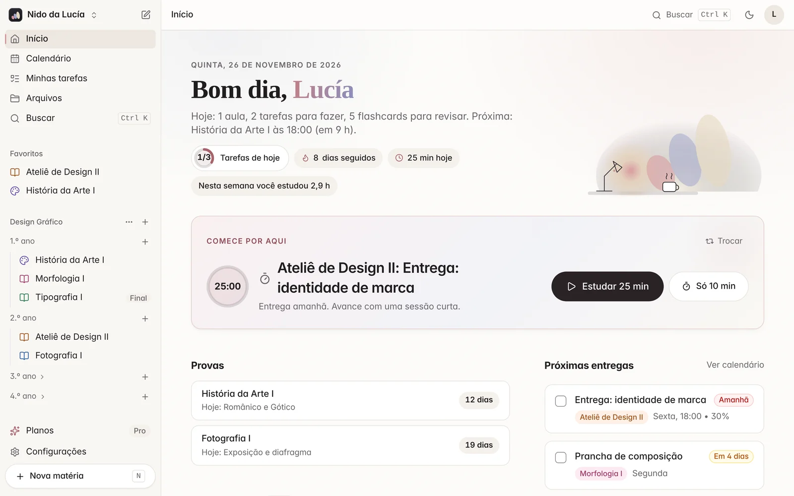
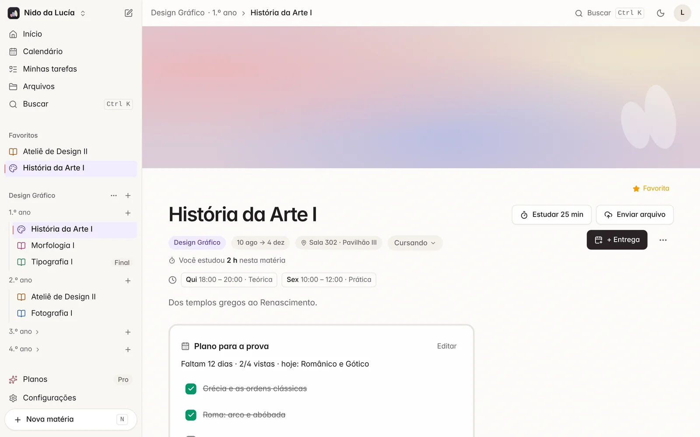
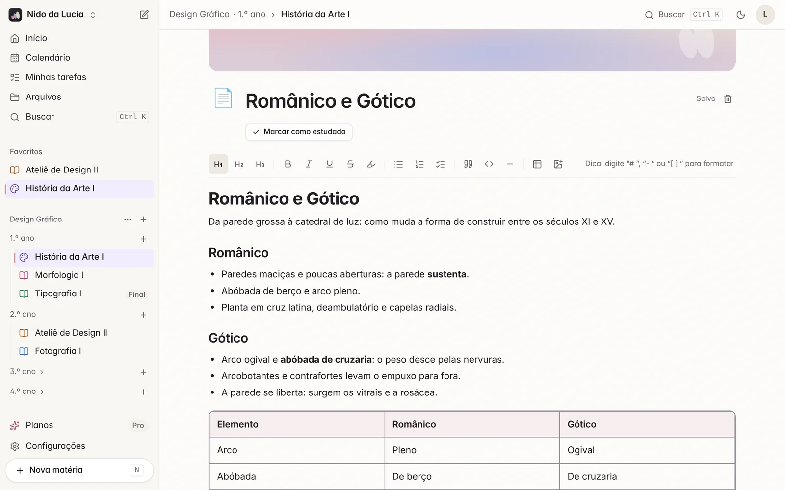
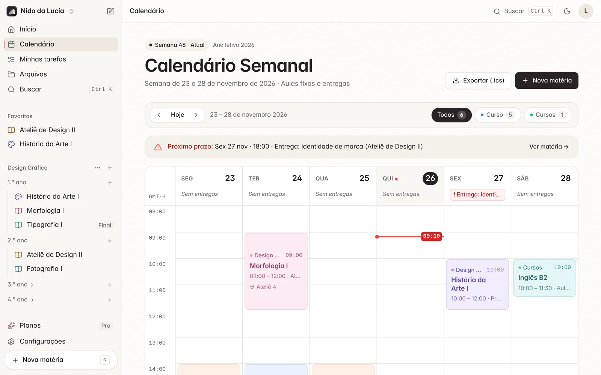
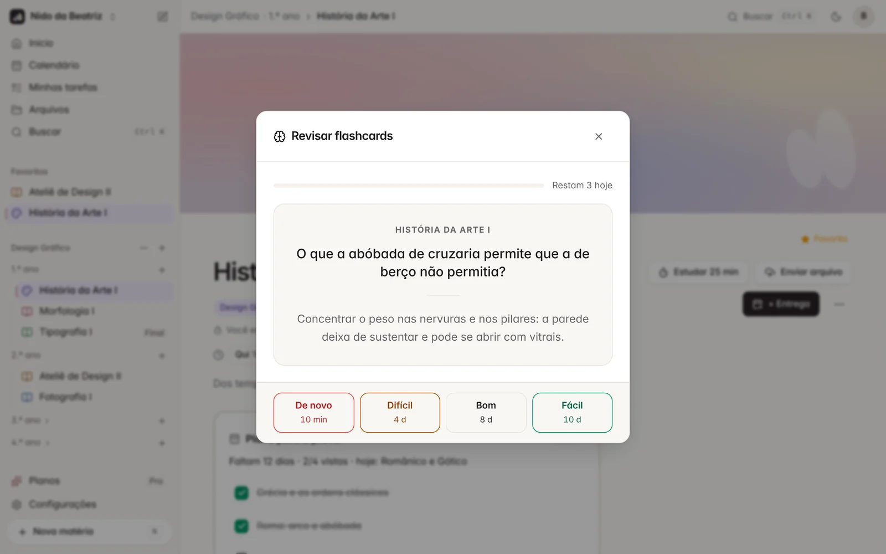
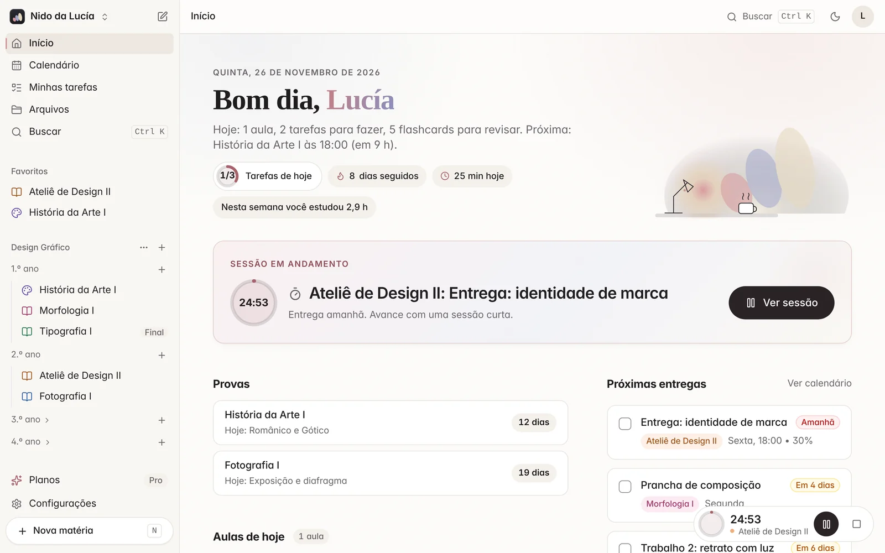
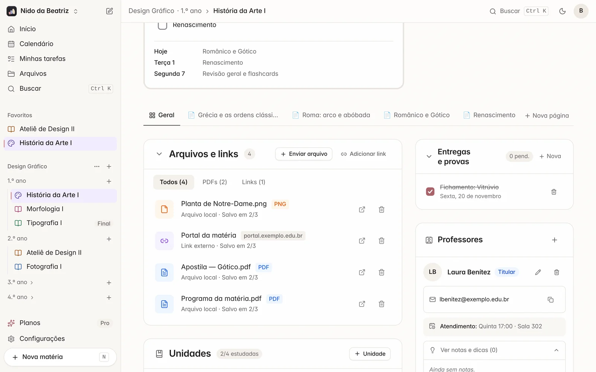
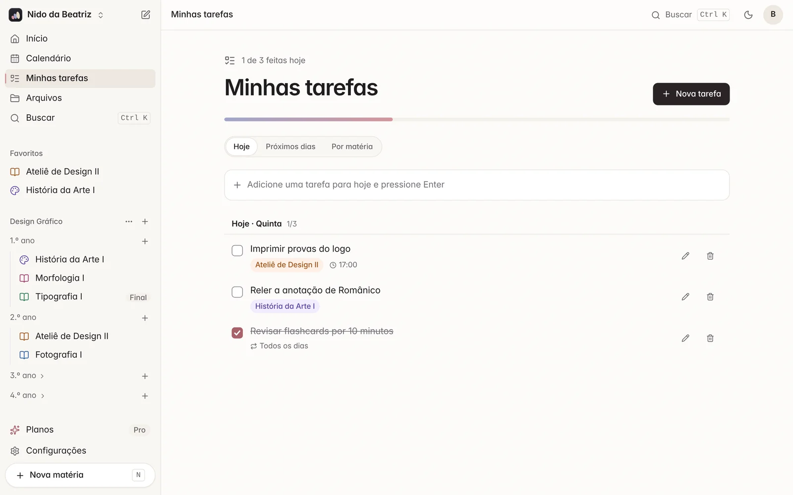
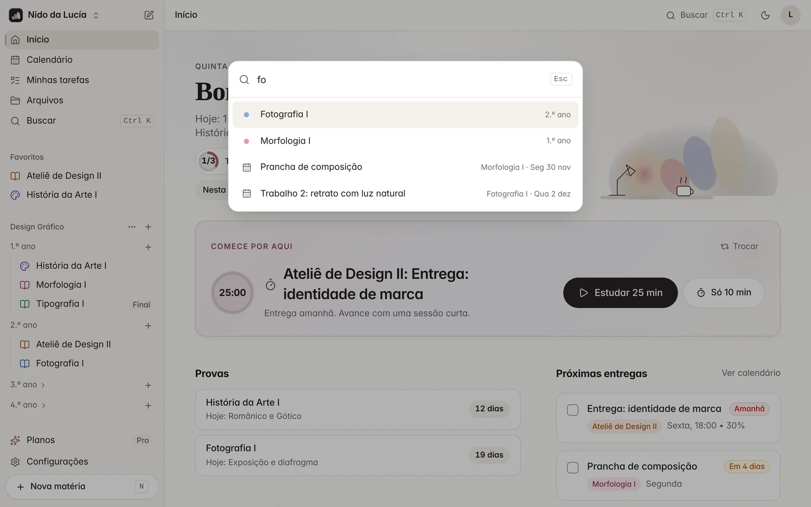
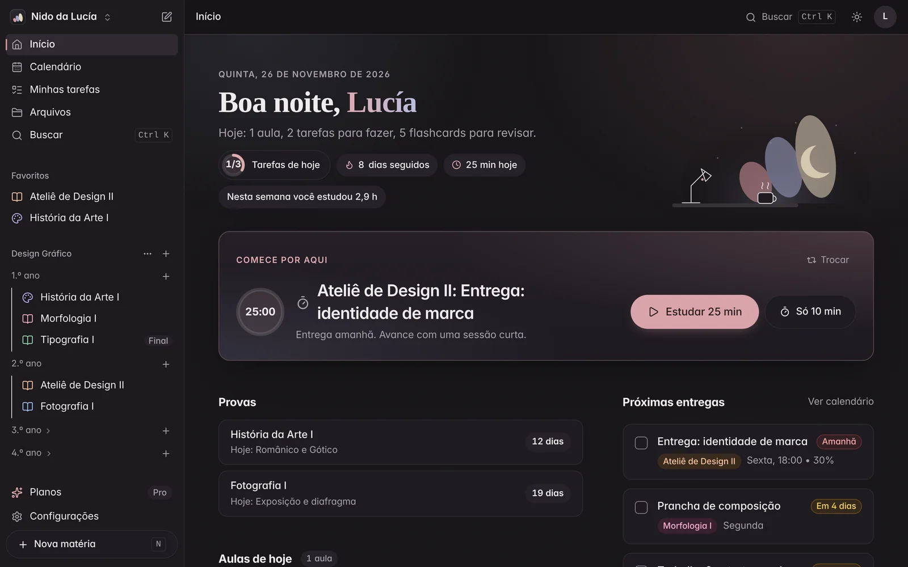

Sequência e horas de estudo
Veja quantos dias seguidos você estudou e quantas horas somou na semana.
Onde cresce o que você aprende
Matérias, anotações, entregas e provas, organizadas do jeito que você estuda. Sempre que abre o Nido, você já sabe por onde começar.
Grátis · Windows 10 e 11 · No Mac, pelo navegador

Tour
Assim é o Nido com um semestre real de exemplo. Escolha uma parte ou deixe passar sozinho.
Matérias Cada matéria com a sua capa, os seus horários, o plano para a prova e todo o material.





Organize
Monte o seu curso por ano e adicione cursos avulsos. Cada matéria guarda as unidades, os arquivos, as entregas e os dados dos professores.

Planeje
As aulas fixas, as entregas e as tarefas do dia ficam no mesmo lugar. Você coloca uma data uma vez e ela aparece onde você precisa.

Encontre
Aperte Ctrl K e vá direto para qualquer matéria, entrega ou seção. Sem procurar pastas, sem perder o fio.

E mais
Veja quantos dias seguidos você estudou e quantas horas somou na semana.
Cada flashcard volta quando você está prestes a esquecer.
Sem internet você vê o último que carregou. Marcar tarefas e revisar flashcards fica salvo e sobe quando a rede volta.
As suas anotações em Markdown, os seus dados em JSON e os flashcards em CSV.
De dia e de noite
O Nido segue o tema do seu sistema ou você escolhe. À noite, o Início te recebe com a lua.

Baixar
O app para computador é para Windows. No Mac, o Nido funciona completo no navegador, com a mesma conta. Por dentro, o app ainda está em espanhol: o português chega em breve.
Windows 10 e 11 · 64 bits · Grátis
Baixar para Windows Abra o instalador, siga os passos e entre com a sua conta.No Chrome, Safari, Edge ou Firefox.
Abrir o Nido na web As mesmas matérias, anotações e flashcards do app para Windows.Planos
Hoje nada é cobrado: os planos pagos abrem em breve.
Para começar a se organizar
US$0
Baixar grátisPara estudar sem limites
US$3/mês
Me avisar pelo appPara quem estuda a sério
US$9/mês
Me avisar pelo appPerguntas frequentes
Um guia rápido para se organizar na faculdade e estudar com o Nido.
Monte o seu curso por ano e adicione as matérias que você está cursando. Cada matéria guarda as unidades, anotações, arquivos, entregas e os dados dos professores. O calendário semanal junta as suas aulas e entregas, as tarefas do dia mostram o que fazer hoje e, sempre que você abre o Nido, o Início sugere por onde começar.
Sim, o Nido é um app para estudar grátis, no Windows e na web. O plano Grátis inclui 1 curso, 1 lista de cursos avulsos, até 5 matérias ativas, 200 flashcards e 100 MB para arquivos. Matérias aprovadas ou arquivadas não contam para o limite.
Na matéria, você coloca a data da prova e os temas que vão cair. O Nido distribui os temas nos dias que faltam, deixa o último dia para uma revisão geral e mostra o que estudar hoje. Se você se atrasar, ele redistribui o que falta, sem você precisar reorganizar nada. Funciona igual para uma prova parcial ou um exame final: só muda a data.
São cartões de pergunta e resposta que você cria em cada matéria. O Nido usa repetição espaçada: depois de cada flashcard você escolhe De novo, Difícil, Bom ou Fácil, e ele volta bem quando você está prestes a esquecer. Dá para criar uma rotina como «Revisar flashcards por 10 minutos» todos os dias.
Ainda não. Flashcards e resumos com IA a partir das suas anotações estão em preparação, ainda sem data. Hoje o Nido ajuda você a organizar o material (os seus PDFs ficam dentro de cada matéria), montar o plano para a prova e revisar com flashcards.
Sim. Comece uma sessão de 10 a 45 minutos e o cronômetro te acompanha pelo app. O Nido soma as suas horas de estudo da semana e a sua sequência de dias seguidos.
Sim: faculdade, curso técnico ou cursos avulsos. Você monta os seus cursos por ano e cada matéria tem as suas unidades, arquivos, entregas e provas.
Sim, no navegador e com a mesma conta. O app para baixar é para Windows; no Mac, o Nido funciona completo na web.
Sim. Você entra com a sua conta no app para Windows ou na web e vê a mesma coisa em todo lugar: matérias, anotações, flashcards, a sua sequência e as suas horas de estudo.
Sem conexão você vê o último que foi sincronizado. Marcar uma tarefa, revisar flashcards e as sessões de estudo ficam salvos e sobem sozinhos quando a rede volta. Criar ou editar o resto precisa de conexão, e o Nido avisa.
Quando quiser: exporte as anotações em Markdown, todos os dados em JSON e os flashcards em CSV em Configurações.
Esta página está em português, mas por dentro o app ainda está em espanhol. O português e o inglês estão a caminho.